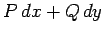

Inhalt Index DeskTop Bronstein

 Integralrechnung Kurvenintegrale Unabhängigkeit des Kurvenintegrals vom Integrationsweg Berechnung der Stammfunktion
Integralrechnung Kurvenintegrale Unabhängigkeit des Kurvenintegrals vom Integrationsweg Berechnung der Stammfunktion


Wenn die Integrabilitätsbedingung (8.127) erfüllt ist, dann ist über einen beliebigen Integrationsweg innerhalb des Gültigkeitsbereiches von (8.127), der einen beliebigen festen Punkt A(x0,y0) mit dem variablen Punkt P(x,y) verbindet (s. Abbildung), die Stammfunktion U(x,y) gleich dem Kurvenintegral:
 |
(8.131) |
Bei praktischen Rechnungen ist es bequem, einen zu den Koordinatenachsen parallelen Integrationsweg zu wählen, d.h. einen der beiden Abschnitte AKP oder ALP, wenn dieser nicht außerhalb des Gültigkeitsbereiches von (8.127) liegt. Somit gibt es zwei Formeln für die Berechnung der Stammfunktion U(x,y) und des vollständigen Differentials :
| (8.132a) |